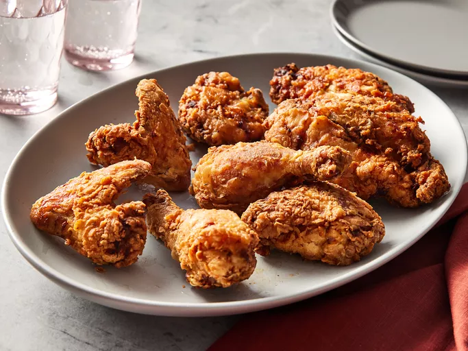

Chef John's Buttermilk Fried Chicken

Description
Buttermilk Crispy Tenders (and their precursor, Chicken Selects) were chicken strips sold by the international fast food restaurant chain McDonald's in the United States and Canada.
Chicken Selects were introduced in early 1998 for a limited time and offered again in early 2002 and late 2003 and then permanently starting in 2004. In the UK, they were launched on the "Pound Saver Menu", which offers various menu items for £0.99.
Ingredients
- 1 (3 1/2) pound chicken, cut into 8 pieces
- 1 teaspoon black pepper
- 1 teaspoon salt
- 1 teaspoon paprika
- 1/2 teaspoon white pepper
- 1/4 teaspoon dried rosemary
- 1/4 teaspoon ground thyme
- 1/4 teaspoon dried sage
- 1/4 teaspoon cayenne pepper
- 2 cups buttermilk
- 2 cups flour
Steps
- Gather all ingredients.
- Toss chicken pieces, black pepper, salt, paprika, white pepper, rosemary, thyme, oregano, sage, and cayenne together in a large bowl.
- Stir in buttermilk until chicken is evenly coated. Cover and refrigerate for 6 hours.
- Combine flour, salt, paprika, cayenne, garlic powder, white pepper, and onion powder in a large shallow dish.
- Remove chicken from buttermilk and dredge each piece in seasoned flour; shake off any excess and transfer to a plate.
- Heat peanut oil in a large Dutch oven to 350 degrees F (175 degrees C).
- Add chicken pieces to the hot oil and fry for 10 minutes. Turn chicken pieces and fry for another 10 to 15 minutes. An instant-read thermometer inserted near the bone should read 165 degrees F (74 degrees C).
- Transfer fried chicken to a cooling rack set over a paper towel-lined baking sheet. Let sit for 10 minutes before serving.
- Enjoy!